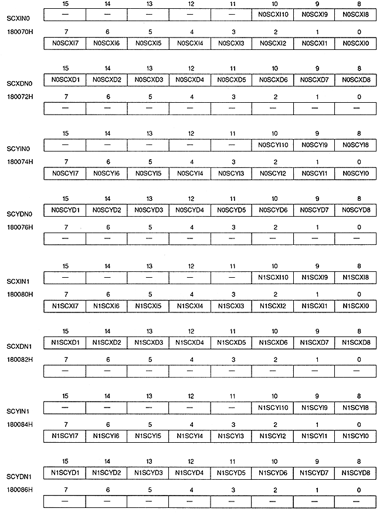

Return to previous page ｜ Return to menu ｜ Go to next page
-
Screen scroll value register
- Screen scroll value register specifies screen scroll value. This is a write-only 16-bit or 32-bit register located at 180070H to 180076H, 180080H to 180086H, and 180090H to 180096H. The value is cleared to 0 after power-on or reset, so be sure to set it.

Return to previous page ｜ Return to menu ｜ Go to next page